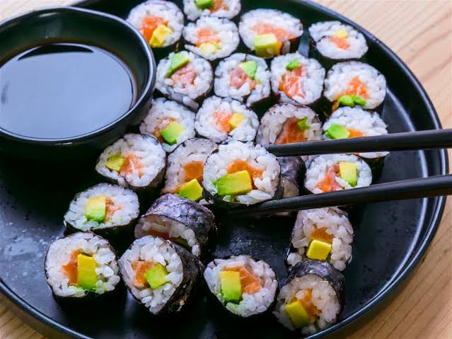
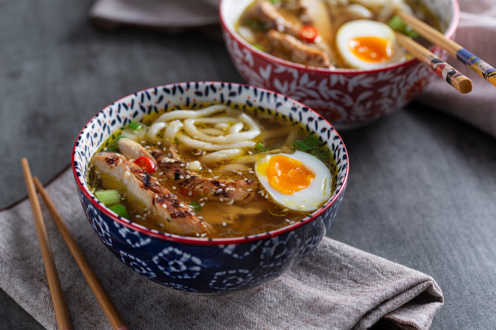
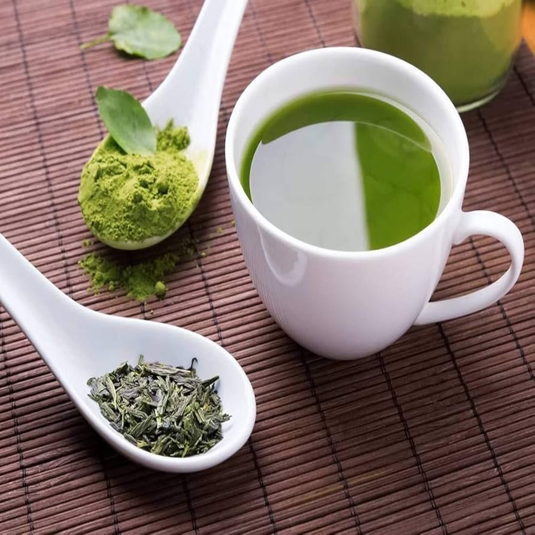

Culinária, tradição e encontros
Alguns pratos e bebidas que serão apresentados durante a semana.

Arroz temperado, nori, legumes e peixe.

Macarrão servido com caldo e acompanhamentos.

Degustação com explicação do preparo tradicional.
Semana da Cultura Japonesa
Todos os direitos reservados.